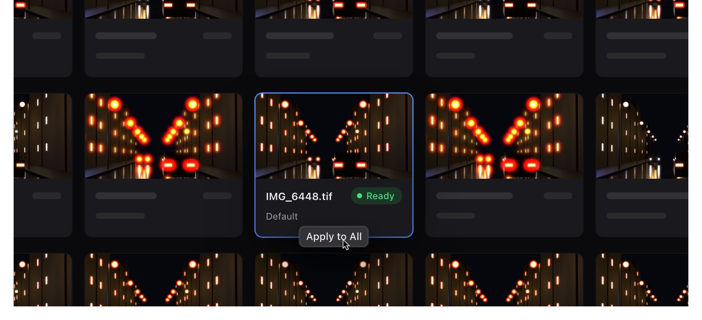
Batch Mode. Up to 500 photos open at once, each with its own settings; Apply to All copies one look across the set.
Next-generation halation for professional work. A Mac app that forms the glow the way film does, in 32-bit float and wide-gamut colour, from the file you open to the file you export.
2.3 beta, for macOS on Apple SiliconFree: every control, full-resolution exportPro: Lightroom Mode, Batch Mode, licence for paid workCompare
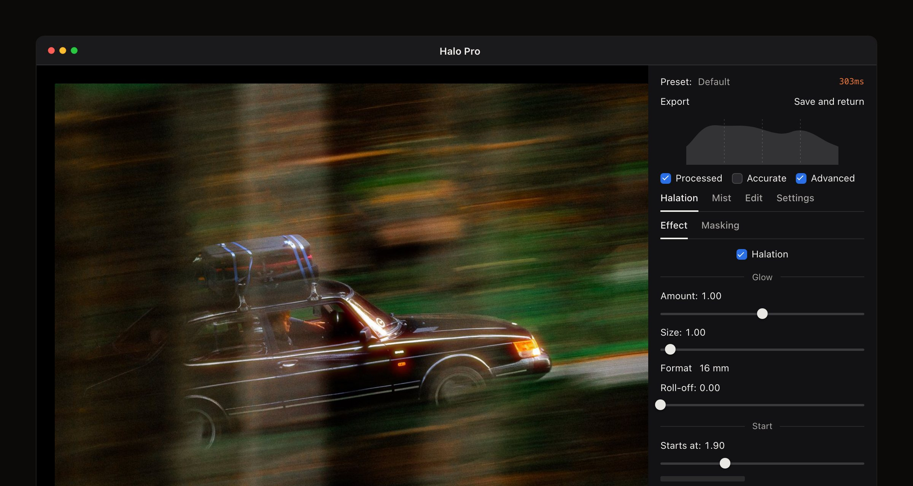
A glow worked out in 8 bits breaks into steps as it fades and loses the light above white. Halo Pro never leaves 32-bit float, keeps one look across wide-gamut colour spaces, and forms the glow from the light itself, the way film does.

Batch Mode. Up to 500 photos open at once, each with its own settings; Apply to All copies one look across the set.
Glow at five stops over white42×the glow at white, measured on 32-bit test charts. It doubles with every stop, as on film.
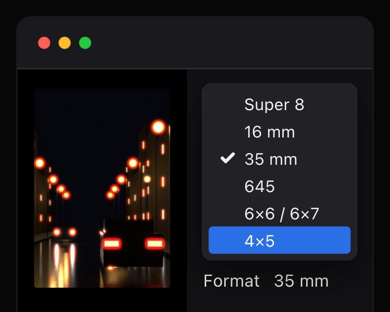
Format. Pick the film your photo should look shot on, Super 8 to 4×5, and the glow takes that film's share of the frame.
One look in sRGB, Display P3, Adobe RGB and ProPhoto RGB.
The glow and the mist are worked out in one working colour space, so a wide-gamut file from Lightroom glows exactly like its sRGB export. Your file keeps its profile.
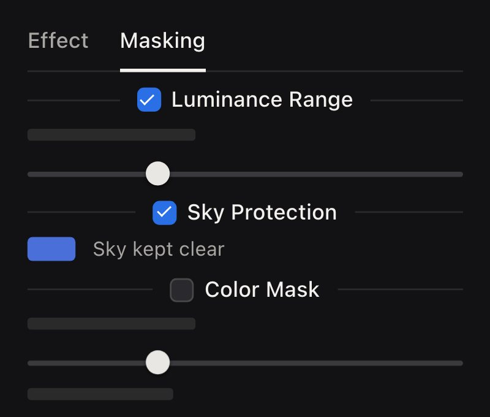
Choose where it glows. Keep it inside a brightness band, hold it back from the sky, or keep it to a colour you pick. Press a number key to see exactly what the engine uses.
Most glow effects take the bright parts of a picture, blur them and tint them red. Film works from the light itself, its colour and how bright it really is, and so does Halo Pro. The same test files, both ways:
On film, blue is stopped near the surface and red reaches the base, so red lights halate most and blue ones not at all. A red blur keys on brightness instead: yellow and white glow, and a pure red light, darker to the eye, barely does.
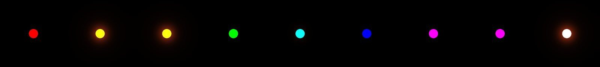
Red blur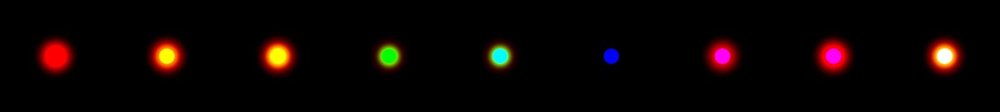
Halo ProEight lights, from two stops under white to five over. Halo Pro works in 32-bit float, so the glow doubles with every stop, as on film. A blur works on the picture as your screen shows it: six identical white dots, so they all get the same halo.
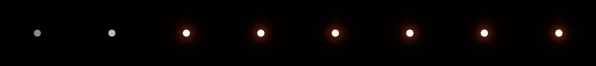
Red blur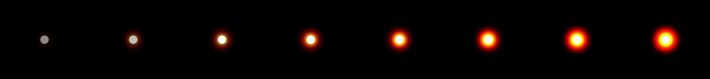
Halo ProMost glow tools treat everything bright as a light: they blur it, tint it and lay it back over the whole picture, so a white wall turns peach, a pale sky warms and the image lifts. Halo Pro adds light only where it spreads past a bright edge into darker surroundings: on this chart every flat surface stays within half a level of where it was. Want bright surfaces a touch warmer? That's its own control, Warmth on highlights.
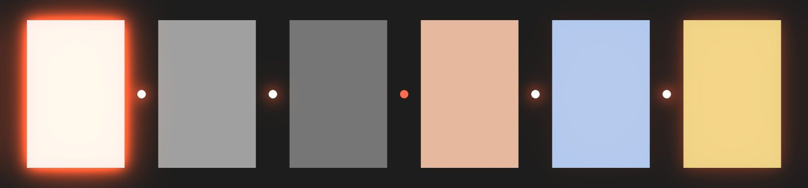
Red blur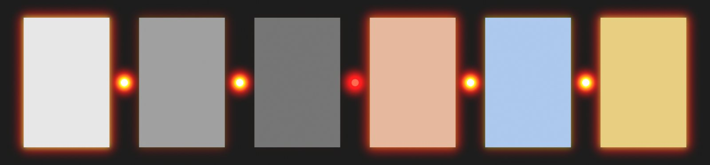
Halo ProHalation tools for stills and video, compared from each maker's own documentation. Several work in high precision too. None of the others documents a glow worked out from the colour of the light, the way film does it, and Halo Pro is built for photographers, with a free version and a one-time €20 Pro.
| What it is | Halation | Glow follows the light's colour | Glow size from film format | Precision and colour | Price | |
|---|---|---|---|---|---|---|
| Halo Pro | Mac app (Apple Silicon); Lightroom Classic round trip | Yes, modelled on film | Yes: red most, blue none | Yes: Super 8 to 4×5 | 32-bit float; same glow in sRGB, P3, Adobe RGB, ProPhoto | Free; Pro €20 once |
| Lightroom Classic | Photo editor | None | — | — | Not stated | Subscription |
| Lightroom | Photo editor (desktop, mobile) | None | — | — | Not stated | Subscription |
| Photoshop (Camera Raw) | Photo editor | Glow slider, Halation style | Not documented | Not documented | Not stated | Subscription |
| Dehancer | Plug-in: Photoshop, Lightroom Classic, Capture One | Yes | Manual Hue and Blue controls | Format profiles | Floating point; photo plug-in sRGB in and out | Subscription or lifetime |
| DaVinci Resolve Studio | Video | Yes | Not documented | Not documented | 32-bit; ACES | $295 once |
| FilmConvert Halation | Video plug-in | Yes | Not documented | Not documented | ACES and linear input | From $59 once |
| Filmbox | Video plug-in | Yes | Not documented | Yes: film gauge | Pro: ACES, P3, Rec.2020 | $199 or $999 once |
| VSCO | Mobile app | Yes | Not documented | Not documented | Not stated | Membership |
On film, halation isn't added on top of the picture. It's a second exposure, made from behind, by light that has already passed through once. Five steps, a few tenths of a millimetre.
No backing: light reflects off the back of the base and comes back up into the emulsion as the red halo. This is CineStill.
A colour negative is three light-sensitive layers stacked on a clear base. Blue is recorded on top, then a yellow filter stops any remaining blue from going deeper. Green and red pass on.
The emulsion absorbs most of the light, never all of it. A fixed share of every tone leaves its underside, scattered at every angle, into roughly 0.13 mm of clear plastic. Under an ordinary tone that share never shows. Under a lamp many stops brighter than its surroundings, the same share is enough to expose the film again.
In Halo ProStarts at · Softness of start: where a file's lights start to glow, standing in for the stops above white a JPEG or TIFF has lost
Where the base meets air, light that hits the back more obliquely than the critical angle — about 42° from straight down, for n ≈ 1.5 — can't get out. It's totally reflected and heads back up at the same angle, away from where it came in. Light closer to straight down mostly escapes. This boundary is where halation is born.
In Halo ProSize · Format · Roll-off: how far the glow travels, measured against the film format you pick
The returning light enters the emulsion from below, and the first layer it meets is the red-sensitive one. It lands in a ring around the source, at a distance set by the base thickness. Where the return is strong, red fills up first and green follows, so the hottest part of the halo reads orange and the faint edge stays red.
In Halo ProGreen return: how orange the strong glow turns
Still film has an anti-halation layer that soaks up most of it. Motion-picture stock has long used remjet — a carbon-black coat on the back of the base. Strip the remjet, as CineStill does, and the mirror is back at full strength. The diagram switches to remjet here; flip it back to No backing to compare.
In Halo ProAmount: how much light comes back, from none (a perfect backing) to twice the built-in look
Ring radius from base thickness t and critical angle θc.
≈ 2 · 0.13 · 0.89 ≈ 0.23 mmFractions of a millimetre on the film — about 1 % of a 35 mm frame's short side — and visible because the source is so much brighter than its surroundings.
That ring is what a single point sends back. Most lights are wider than the ring, so the rings from all their points overlap and fill in: a bright core and a soft tail. The dark gap only shows around pinpoints, such as stars and far-off street lamps. Halo Pro draws the filled-in shape; the pinpoint ring is on the roadmap.
How far the light travels sideways is set by the base, not by the picture. Put the same film in a bigger camera and the halo stays the same physical size while the frame grows around it. It's why 35 mm glows and medium and large format glow far less.
In Halo Pro that's Format: pick the film your photo should look shot on (Super 8, 16 mm, 35 mm, 645, 6×6 / 6×7 or 4×5) and the glow takes that film's share of the frame. The halo against the frame, compared with 35 mm:
Also in the menu: Super 8 × 6.0 · 16 mm × 3.2 · 645 × 0.58. Ratios assume one base thickness on every size. The same street on all six formats →
Each step of the light path is built in or has its own control, under the app's own name. The glow is worked out in linear light, in one working colour space, from the light in your photo; Amount sets how much comes back. The Default is a tuned starting point: open a photo and it already glows.
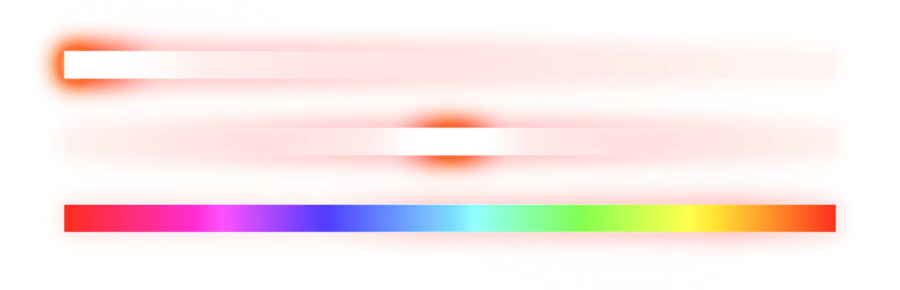
Three bars of light on black: white fading to nothing, a hot centre, and every hue of an RGB file. The glow follows the light: it fades with the white bar and is strongest around the hottest part. Red and magenta glow red, yellow orange. Green, the brightest colour here to the eye, barely glows, and blue not at all: on film, blue is stopped on the way down and red reaches the base.
Measured: brightness, colour, size and more, in the technical note →
A fixed share of all light reaches the base. Only lights many stops brighter than their surroundings send enough to see.
Where the glow is half on, in stops below white, and how gently it comes in from below that. Light above white in a 32-bit file glows more still.
The blue layer and the yellow filter catch blue before it reaches the base. Red goes deepest.
The glow is worked out in linear light, in one working colour space, so it looks the same whatever your file's profile. A blue light makes no glow.
Set by base thickness and angle: a property of the film stock.
Format picks the film the glow is measured against (see Scale). Size 1 is a bell about 0.07 mm wide (σ) on 35 mm film; Roll-off adds a long, smooth tail.
Returning light exposes red. Where the return is strongest, red fills up and green catches up: orange.
How orange the strong glow turns. 0 keeps it pure red; higher gives the warm, orange cores of strong halation.
A dark layer absorbs the light before it can come back up.
How much comes back: 0 is none, as with a perfect backing, 1 the built-in look, 2 twice that.
Where the film is already fully exposed, extra light barely shows. You see the halo against the darker surroundings.
How much glow shows on top of bright surfaces. Low keeps them clean, as on film; 1 shows it everywhere it reaches.
The glow forms under every bright area, but you only see it against the dark around it.
Halo Pro adds the glow only where it spreads past a bright area (Warmth on highlights, on in the Default, also warms bright surfaces a touch). In Advanced, Smooth wide glow and Soft fall-off keep a wide glow even over branches, hair and fabric.
On film, every bright source halates, in one colour. In an edit you may want less on the sky or skin, or a colour no film has.
Keep the glow inside a brightness band, turn it down on sky-coloured areas, or hold it back from (or boost it on) a colour you pick. Glow color and Color mix take it to any colour; Warmth on highlights warms bright surfaces a touch, as the Default does. Neither is part of the light path.
A mist filter scatters light in front of the lens; fringing and smear come from the glass; grain and bloom are separate looks. Different mechanisms.
In a camera the filter comes first and the film halates what gets through. Halo Pro runs Mist after halation on purpose, so the two controls don't interfere; mist also softens the halo. Fringing and Lens Smear are creative effects on the glow, inspired by lens faults.
Digital files that sit next to your scans without looking like strangers. Set Format to the film you shoot and keep Amount low. Nobody should notice the effect, only that the light feels right.
Headlights in rain, sun through trees, a window behind someone. Halation where the scene earns it, not across the frame.
Glow colours no film ever had, long dreamy tails, directional smear, turbulent mist.
The glow falls from a bright core to nothing over hundreds of pixels. Round that to 8 bits between blur passes and the falloff turns into steps. Halo Pro works in 32-bit float at every step, from opening the file until it is written out.
The left image is cut to far fewer levels so the problem shows on screen. In real files it shows up as faint rings in dark falloffs, and it grows each time a tool rounds between steps.
On film, a lamp four stops over white sends back far more light than a white shirt. Halo Pro sees that difference in a 32-bit file: the lamp gets a strong halo and the shirt a faint rim. A JPEG clips both to the same white, so the lamp's halo drops to the shirt's level. Telling them apart in clipped files, and opening raw files with all their headroom, is in development.
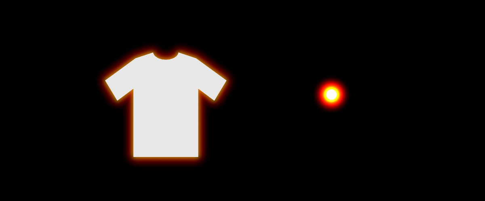
From a 32-bit file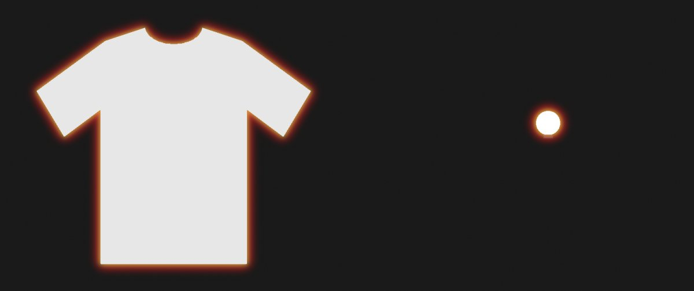
From a JPEG, clipped at white16-bit TIFF and PNG are read at 16 bits; 32-bit and half-float TIFFs open too. JPEG, BMP and WebP at 8 bits. Shooting raw? Send a 16-bit TIFF from your raw editor, or let Lightroom Mode (Pro) do the round trip. Transparent areas are flattened. Raw and HEIC are on the roadmap.
PNG 8 or 16-bit. JPEG at quality 95, full colour resolution. 8-bit files are dithered so skies don't band. A 32-bit TIFF keeps light the glow pushes above white, unless a LUT after mist, or Bloom, clips it.
The glow and the mist look the same whether a photo is saved in sRGB, Display P3, Adobe RGB or ProPhoto RGB. The preview is colour-managed to your screen, and the export keeps the profile. ProPhoto RGB can be kept or converted to sRGB on import.
With a bundled ExifTool. If a file's camera metadata can't be copied, Halo Pro says so.
Before halation or after mist, with an intensity slider. Saved inside presets. The glow is always measured on your photo as you opened it.
The glow is a share of the picture, so the quick preview and the export glow alike. Accurate (P) renders at full resolution for a true 1:1.
The glow, mist and LUT run on the GPU. A 12-megapixel export takes about 0.9 s on an M3 Max (1.x: 1.2–1.7 s).
The free version has every control and mask view, full-resolution export up to 32-bit float, LUTs and presets, no watermark and no time limit. It's for personal use. Pro adds the licence for paid work (a client, a commission, anything you sell) plus Lightroom Mode and Batch Mode.
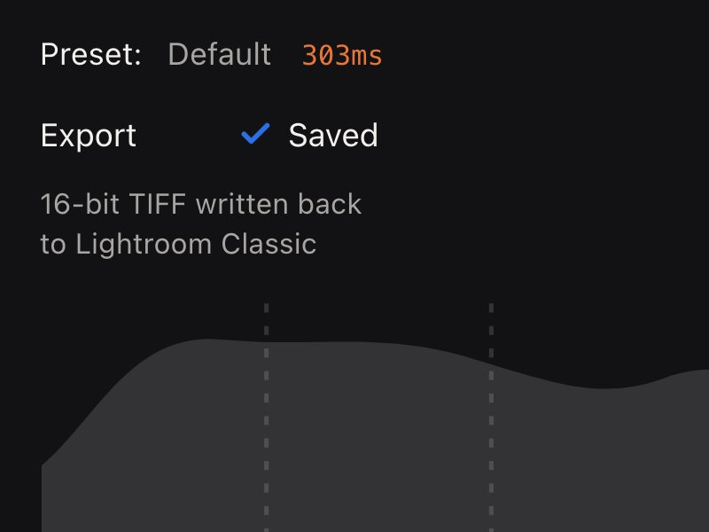
Add Halo Pro once in Lightroom Classic as an additional external editor. Then right-click a photo, Edit In, Halo Pro: Lightroom hands over a TIFF, you set the look, and Save and return writes a 16-bit TIFF back with its metadata. One photo at a time; for a set, export TIFFs from Lightroom, run them through Batch Mode and import the results back.
Lightroom Classic › Settings › External Editing › Additional External Editor: choose Halo Pro.app, then TIFF, ProPhoto RGB, 16-bit, compression None or ZIP.
Open up to 500 photos at once; loading stops if less than 1.5 GB of memory is free. Each photo keeps its own settings. Apply to All copies one look across the set, and Cmd+C / Cmd+V copy a look between photos. The Batch Exp button writes every photo with its own settings and never overwrites a file: a name that's taken gets a number.
€0personal use
€20one-time, for one person
€60one-time
RequiresmacOS 14 Sonoma or later on a Mac with Apple Silicon (M1 or newer). Up to 100 MP and 500 MB per file. Signed, and notarised by Apple.
InstallOpen the DMG from Gumroad and drag Halo Pro to Applications. To activate Pro, enter the licence key from your Gumroad download page under Settings › Help › Enter License Key. It's checked online once, then works offline.
BetaHalo Pro 2.3 is a beta, and updates are free. Two known limits: very fine diagonal stripes (blinds, grilles) can show a faint moiré in the glow, and very big glows (Size above about 5) can land unevenly on faces and trees.
UpgradingOwn 1.0 or 2.2? 2.3 is a free update in your Gumroad library, and your key still works. Looks saved in 1.x keep their mist, LUT and other settings and start with the new glow, once; the originals are kept.
RefundsTry the free version on your own photos first: it has every control. It's a digital download, so there are no refunds.
Look at the street at the top of this page. Panning past at speed, a chrome strip catches the light and gets a red-orange edge; a lamp four stops over white gets a wide halo, and the dark wall beside it gets none. That is what film does. Light goes through the emulsion, bounces off the back of the base and comes back up into the red-sensitive layer, and only the brightest lights come back. Most glow effects blur everything bright and tint it red.
I'm a photographer, and I build my own tools when the ones I can buy get the light wrong. In 2024 I started reading how halation really forms, and built a tool that does what the film does: the glow worked out from each light's colour and real brightness, in 32-bit float. It shipped in September. In October I checked it against the physics, threw the engine away and rebuilt it.
The free version has every control. Pro is 20 euros, once. Try it on yours.
Alric Ljunghager, Stockholm · alric.ljunghager@gmail.com. Settings › Help › Report Bug copies a report with the log; I read every one.
Built by one photographer since 2024, with four 2.x releases in its first week. Here is what shipped, what's next, and ideas for later.
As of November 2026